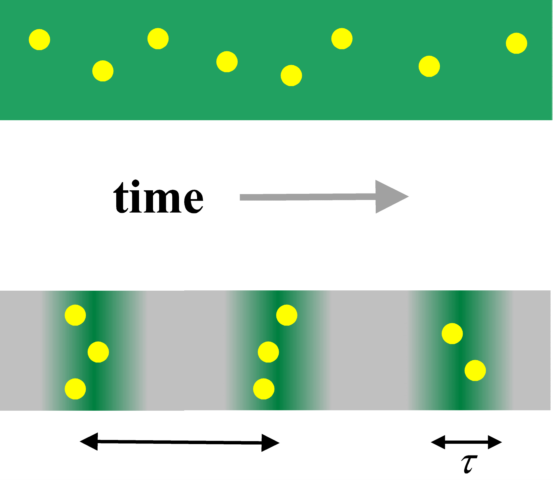
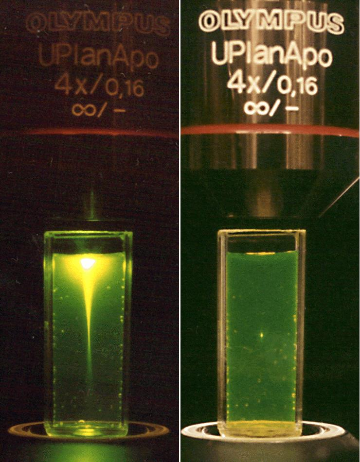
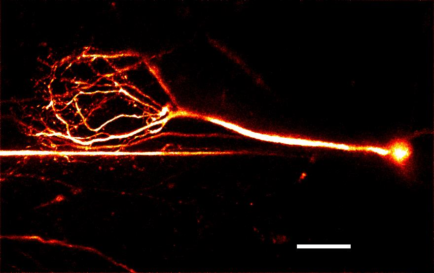
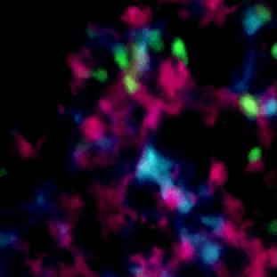
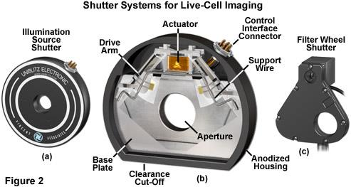
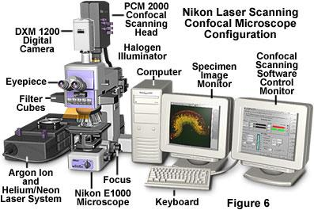

8 Two-Photon Microscopy
8.1 Principle: Nonlinear Excitation
Two-photon excitation (2PE) is a nonlinear optical process in which a fluorophore absorbs two photons simultaneously, each carrying half the energy required for the \(S_0 \to S_1\) transition. The probability of two-photon absorption scales as the square of the instantaneous intensity:
\[F_{2PE} \propto \sigma_2 \cdot I^2(t)\]
where \(\sigma_2\) is the two-photon absorption cross-section (measured in Göppert-Mayer units, \(1\,\mathrm{GM} = 10^{-50}\,\mathrm{cm^4\,s\,photon^{-1}}\)) and \(I\) is the instantaneous photon flux. This quadratic dependence is the fundamental origin of the technique’s most important properties.
To achieve measurable two-photon absorption rates without damaging the sample, it is essential to concentrate the excitation in both space (tight focusing) and time (ultrashort pulses). A mode-locked Ti:sapphire laser delivers pulses of $\(100–150 fs duration at ~80 MHz repetition rate — concentrating photons into brief bursts while maintaining a modest average power (\)<100$ mW at the sample):

8.2 Intrinsic Optical Sectioning
Because 2PE scales as \(I^2\), excitation is confined to the focal volume where the intensity is highest. Out-of-focus planes contribute negligibly — even though light passes through them. This gives intrinsic optical sectioning without a pinhole.
The consequence is dramatically visible: in a cuvette of fluorescent dye, one-photon excitation (visible laser) illuminates the entire beam path, while two-photon excitation (near-IR, \(\sim 900\) nm) produces fluorescence only at the focus:

8.3 Why Near-Infrared?
Two-photon excitation uses wavelengths roughly twice those used for one-photon excitation — typically 700–1000 nm (near-IR). This has three major practical consequences:
Reduced scattering: biological tissue scatters light with a wavelength dependence of approximately \(\lambda^{-4}\) (Rayleigh) to \(\lambda^{-1}\) (Mie). Near-IR light penetrates far deeper than visible light — enabling imaging hundreds of microns into tissue, compared to $<$50 µm for confocal.
Reduced phototoxicity: near-IR photons are not absorbed by most endogenous chromophores (hemoglobin, flavins, NADH), reducing out-of-focus photodamage.
No pinhole needed: all collected fluorescence comes from the focal volume, so non-descanned detection with large-area photomultipliers maximizes signal collection even after scattering.
8.4 Imaging Deep into Tissue
The combination of near-IR excitation and intrinsic sectioning makes two-photon microscopy the method of choice for imaging intact tissue, in vivo preparations, and thick specimens where confocal fails:


8.5 Instrument Configuration
Two-photon microscopy uses a laser-scanning architecture similar to confocal, but with key differences: no pinhole, non-descanned detection preferred, and a Ti:sapphire (or fiber) pulsed laser source. Fast mechanical shutters control laser exposure and protect live samples:

A complete laser-scanning confocal/two-photon system integrates the scan head, microscope body, laser sources, and acquisition computers into a controlled workstation:

8.6 Two-Photon vs. Confocal: When to Choose
| Confocal | Two-photon | |
|---|---|---|
| Excitation wavelength | Visible (405–647 nm) | Near-IR (700–1000 nm) |
| Depth penetration | \(< 100\,\mu\)m in tissue | \(> 500\,\mu\)m in tissue |
| Sectioning mechanism | Pinhole | \(I^2\) nonlinearity |
| Out-of-focus bleaching | Yes | Minimal |
| Phototoxicity | Moderate | Low (out-of-focus) |
| Signal at depth | Drops quickly | Much more robust |
| Cost | Lower | Higher (Ti:Sa laser) |
Two-photon excitation is the method of choice whenever depth penetration, reduced phototoxicity, or intrinsic third-harmonic generation (THG) for label-free structural imaging are needed. Confocal is generally preferable for thin specimens and multicolor experiments where near-IR two-photon cross-sections are limiting.
Two-photon setups naturally enable second harmonic generation (SHG) and third harmonic generation (THG) imaging of non-centrosymmetric structures (collagen fibers, myosin filaments, lipid droplet interfaces) — entirely label-free. These coherent nonlinear signals appear at exactly \(\lambda/2\) or \(\lambda/3\) and are spectrally separable from two-photon fluorescence.
Textbooks
- Pawley, J. (ed.) Handbook of Biological Confocal Microscopy, 3rd ed. Springer (2006) — Chapter 28: two-photon microscopy; Chapter 38: nonlinear microscopy.
- Masters & So (eds.) Handbook of Biomedical Nonlinear Optical Microscopy. Oxford University Press (2008) — comprehensive reference on 2PE, SHG, THG, and CARS microscopy.
Key papers — Foundations
- Denk, Strickler & Webb. Two-photon laser scanning fluorescence microscopy. Science (1990). DOI — the paper that introduced 2PE microscopy to biology; essential reading.
- Göppert-Mayer, M. Über Elementarakte mit zwei Quantensprüngen. Ann. Phys. (1931). DOI — the theoretical prediction of two-photon absorption, 30 years before the laser made it experimentally accessible.
Key papers — Applications and deep imaging
- Helmchen & Denk. Deep tissue two-photon microscopy. Nature Methods (2005). DOI — the definitive review of why and how 2PE penetrates deep tissue; covers scattering, pulse dispersion, and in vivo imaging.
- Svoboda & Yasuda. Principles of two-photon excitation microscopy and its applications to neuroscience. Neuron (2006). DOI — excellent practical guide with neuroscience applications.
Key papers — SHG/THG
- Campagnola & Loew. Second-harmonic imaging microscopy for visualizing biomolecular arrays in cells, tissues and organisms. Nature Biotechnology (2003). DOI — label-free SHG imaging of collagen and myosin.
Online
- iBiology — Two-Photon Microscopy — video lectures by Watt Webb (inventor) and others.
- Coherent — Ultrafast lasers for microscopy — technical notes on Ti:sapphire and fiber laser selection for 2PE.
- Spectra-Physics — Two-photon microscopy guide — practical guide to laser selection, pulse width, and dispersion compensation.
Exercises
- Estimate the two-photon excitation rate for a fluorescein molecule (\(\sigma_2 \approx 38\,\mathrm{GM}\) at 800 nm) at the focus of a 100× / 1.4 NA objective with 10 mW average power and 100 fs pulses at 80 MHz. Compare with the one-photon rate under CW illumination at the same average power.